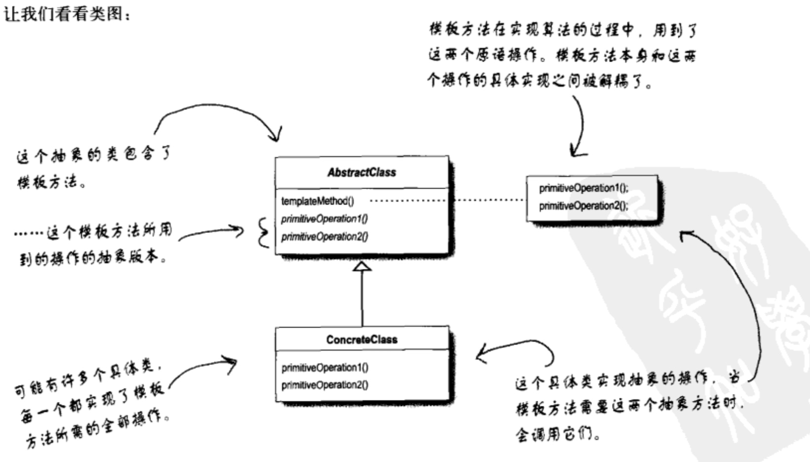
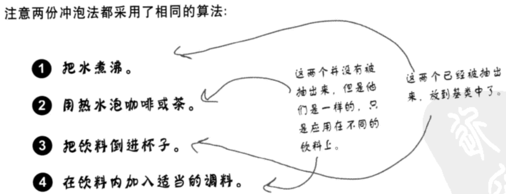
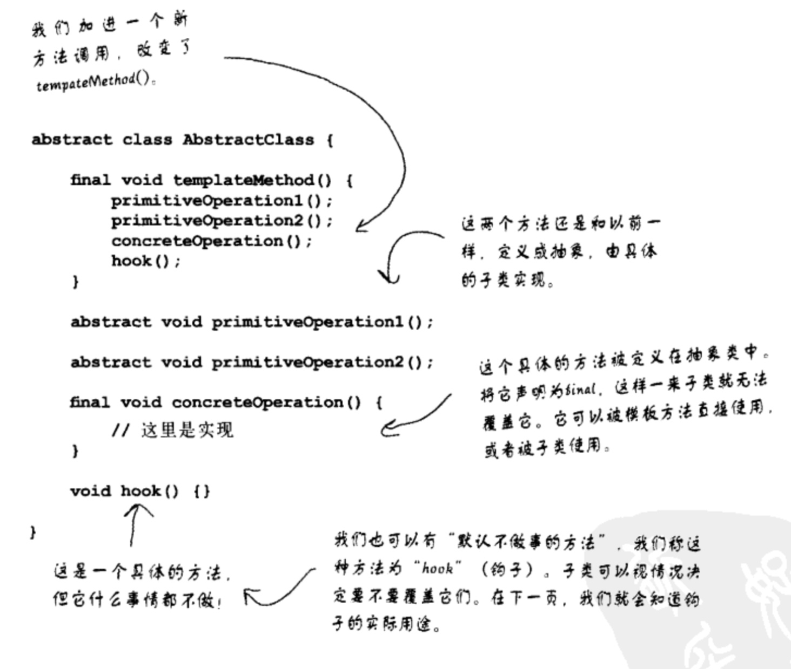
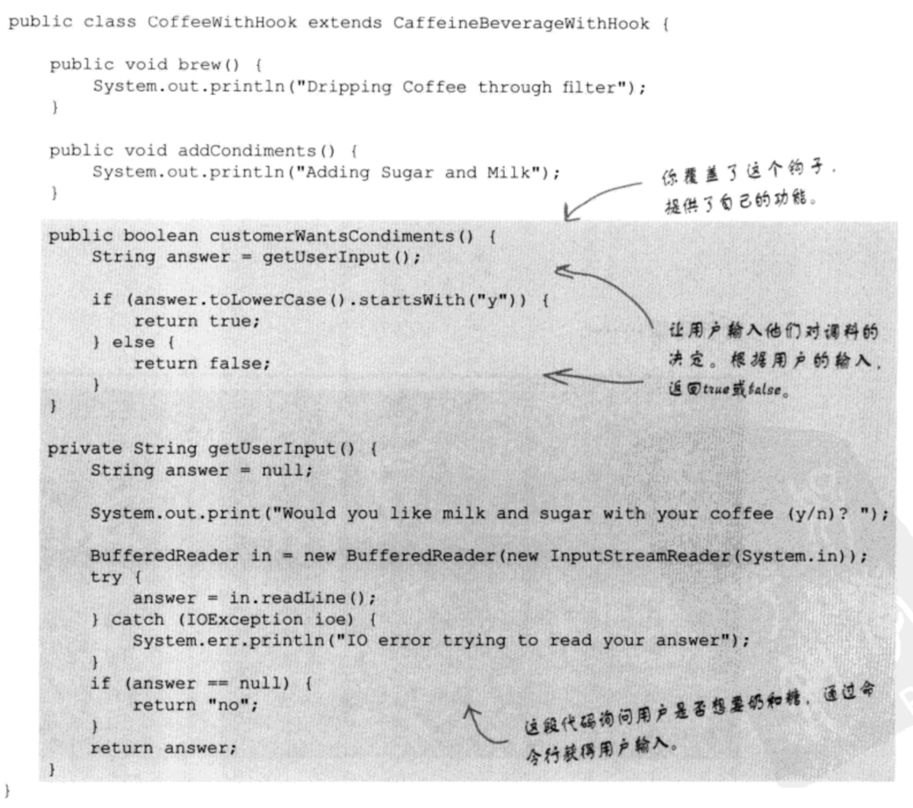
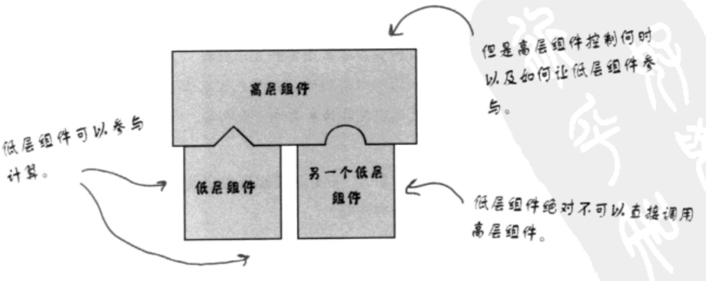

设计模式之模板方法模式
定义
模板方法模式在一个方法中定义了一个算法的骨架，而将一些步骤延迟到子类中。模板方法使得子类可以在不改变算法结构的情况下，重新定义算法中的某些步骤。这个模式是用来创建一个算法的模板。什么是模板？如你所见的，模板就是一个方法。更具体地说，这个方法将算法定义成一组步骤，其中的任何步骤都可以是抽象的，由子类负责实现。这可以确保算法的结构保持不变，同时由子类提供部分实现。 它的意图是定义一个算法的大纲，由其子类定义其中某些步骤的内容。
模板方法模式跟策略模式有点类似。 都封装算法，模板方法用继承，策略模式用组合。工厂方法是模板方法的特殊版本。
类图

代码示例：
class Tea(object):
def perpareRecipe(self):
self.boil_water()
self.steep_tea_bag()
self.pour_in_cup()
self.add_lemon()
def boil_water(self):
print("boil water")
def steep_tea_bag(self):
print("steep_tea_bag")
def pour_in_cup(self):
print("pour_in_cup")
def add_lemon(self):
print("add_lemon")
class Coffee(object):
def perpareRecipe(self):
self.boil_water()
self.brew_coffee_grinds()
self.pour_in_cup()
self.add_sugar_and_milk()
def boil_water(self):
print("boil water")
def brew_coffee_grinds(self):
print("brew_coffee_grinds")
def pour_in_cup(self):
print("pour_in_cup")
def add_sugar_and_milk(self):
print("add_sugar_and_milk")
详细观察两个类，我们发现有两个方法是一样的，我们该怎么办？
from abc import ABCMeta, abstractmethod
class Beverage:
__metaclass__ = ABCMeta
@abstractmethod
def prepareRecipe(self):
pass
def boil_water(self):
print("boil water")
def pour_in_cup(self):
print("pour_in_cup")
class Tea(object):
def perpareRecipe(self):
self.boil_water()
self.steep_tea_bag()
self.pour_in_cup()
self.add_lemon()
def steep_tea_bag(self):
print("steep_tea_bag")
def add_lemon(self):
print("add_lemon")
class Coffee(object):
def perpareRecipe(self):
self.boil_water()
self.brew_coffee_grinds()
self.pour_in_cup()
self.add_sugar_and_milk()
def brew_coffee_grinds(self):
print("brew_coffee_grinds")
def add_sugar_and_milk(self):
print("add_sugar_and_milk")
这样OK了么？平常我们觉得这样就已经OK了，但是我们仔细看看，我们不光发现两个方法是相同的，还发现另外两个方法的算法是类似的：

抽象prepareRecipe() 我们遇到的第一个问题就是，咖啡使用brewCoffeeGrinds()和addSugerAndMilk()方法，而茶使用steepTeaBag()和addLemon()方法。让我们思考这一点：浸泡(steep)和冲泡(brew)差异其实不大。所以我们给它一个新的方法名称，比方说brew()，然后不管是泡茶或者冲泡咖啡我们都用这个名称。类似地，加糖和牛奶都是在饮料中加入调料。让我们也给它一个新的方法名称：addCondiments()。这样一来，新的prepareRecipe()方法看起来像是这样：
from abc import ABCMeta, abstractmethod
class Beverage:
__metaclass__ = ABCMeta
def prepareRecipe(self):
self.boil_water()
self.brew()
self.pour_in_cup()
self.addCondiments()
@abstractmethod
def brew(self):
pass
@abstractmethod
def addCondiments(self):
pass
def boil_water(self):
print("boil water")
def pour_in_cup(self):
print("pour_in_cup")
class Tea(object):
def addCondiments(self):
print("add lemon")
def brew(self):
print("steeping the tea")
class Coffee(object):
def brew(self):
print("dripping coffee")
def addCondiments(self):
print("add sugar and milk")
整个过程中，prepareRecipe()就是模板方法。
模板方法的最大好处就是模板方法封装的算法只存在于一个地方（父类），所以很容易修改。如果不这样，则像之前一样每个子类中都有一个prepareRecipe的算法，那么如果这个算法需要修改的话，则需要每个子类都修改一遍，相当麻烦。
深入一些

对模板方法进行挂钩（hook）
钩子是一种被声明在抽象类中的方法，但只有空的或者默认的实现。钩子的存在，可以让子类有能力对算法的不同点进行挂钩。要不要挂钩，由子类决定。 钩子有好几种用途，让我们先看其中一个，稍后再看其他几个：
public abstract class CaffeineBeverageWithHook {
final void prepareRecipe() {
boilWater();
brew();
pourInCup();
// 我们加上了一个小小的条件语句，而该条件是否成立，
// 是由一个具体方法customerWantsCondiments()决定的。
// 如果顾客“想要”调料，只有这时我们才调用addCondiments()。
if (customerWantsCondiments()) {
addCondiments();
}
}
abstract void addCondiments();
abstract void brew();
public void boilWater() {
System.out.println("Boiling water");
}
public void pourInCup() {
System.out.println("Pouring into cup");
}
// 我们在这里定义了一个方法，（通常）是空的缺省实现。这个方法只会返回true，不做别的事。
// 这就是一个钩子，子类可以覆盖这个方法，但不见得一定要这么做。
boolean customerWantsCondiments() {
return true;
}
}
使用钩子（hook）
钩子有几种用法。钩子可以让子类实现算法中可选的部分，或者在钩子对于子类的实现并不重要的时候，子类可以对此钩子置之不理。钩子的另一个用法，是让子类能够有机会对模板方法中某些即将发生的（或刚刚发生的）步骤做出反应。比方说，名为justReOrderList()的钩子方法允许子类在内部列表重新组织后执行某些动作（例如在屏幕上重新显示数据）。正如你刚刚看到的，钩子也可以让子类有能力为其抽象类做一些决定。

疑问
（1）当我创建一个模板方法时，怎么才能知道什么时候该使用抽象方法，什么时候使用钩子呢？
答：当你的子类“必须”提供算法中某个方法或步骤的实现时，就使用抽象方法。如果算法的这个部分是可选的，就用钩子。如果是钩子的话，子类可以选择实现这个钩子，但不强制这么做。
（2）使用钩子的真正目的是什么？
答：钩子有几种用法。钩子可以让子类实现算法中可选的部分，或者在钩子对于子类的实现并不重要的时候，子类可以对此钩子置之不理。钩子的另一用法是让子类能够有机会对模板方法中某些即将发生的（或刚刚发生的）步骤做出反应。
（3）子类必须实现抽象类中的所有方法吗？
答：是的，必须为模板方法算法中未定义步骤提供完整的实现。
（4）似乎我应该保持抽象方法的数目越少越好，否则，在子类中实现这些方法将会很麻烦。
答：我们可以让算法内的步骤不要切割的太细，但是如果步骤太少的话，会比较没有弹性，所以要看情况折衷，记住，某些可选步骤可以做成钩子。
（5）在java api中，还有其他模板方法的例子吗？
答：是的，比方说，java.io的InputStream类有一个read()方法，是由子类实现的，而这个方法又被read(byte b[], int off, int len)模板方法使用。
设计原则
好莱坞原则 我们有一个新的设计原则，称为好莱坞原则：
好莱坞原则：别调用（打电话给）我们，我们会调用（打电话给）你。
很容易记吧，但这和OO设计又有什么关系呢？ 好莱坞原则可以给我们一种防止“依赖腐败”的方法。当高层组件依赖低层组件，而低层组件又依赖高层组件，而高层组件又依赖边侧组件，而边侧组件又依赖低层组件时，依赖腐败就发生了。在这种情况下，没有人可以轻易地搞懂系统是如何设计的。 在好莱坞原则之下，我们允许低层组件将自己挂钩到系统上，但是高层组件会决定什么时候和怎样使用这些低层组件。换句话说，高层组件对待低层组件的方式是“别调用我们，我们会调用你”。 好莱坞原则和模板方法之间的连接其实还算明显：当我们设计模板方法模式时，我们告诉子类，“不要调用我们，我们会调用你”。怎样才能办到呢？让我们再看一次咖啡因饮料的设计： 1. CaffeineBeverage是我们的高层组件，它能够控制冲泡法的算法，只有在需要子类实现某个方法时，才调用子类。 2. 饮料的客户代码只依赖CaffeineBeverage抽象，而不依赖具体的Tea或Coffee，这可以减少整个系统的依赖。 3. Tea和Coffee子类只简单提供brew()和addCondiments()方法的实现细节。如果Tea和Coffee没有先被调用，绝对不会直接调用抽象类。
